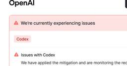

ITmedia AI＋ 最新記事一覧
https://www.itmedia.co.jp/aiplus/
生成AIを中心とするAIのビジネス活用にフォーカス。業務改善や新規事業の応用事例、活用方法、機能比較、ルール整備といった情報を読者に日々届けることで、AI活用をサポートします。
フィード

「AIトークンコスト増を44％抑制」できる可能性も 高性能モデルの“使い過ぎ”、どう減らす？ 1
1
ITmedia AI＋ 最新記事一覧
生成AIやAIエージェントの活用が広がる中、企業のAI利用コストも膨らんでいる。AI活用を減らすことなく、増加するコストを抑えるには何を見直せばいいのか。アクセンチュアの調査から、その実態が見えてきた。
9時間前

「1週間の開発タスク」でAIの限界を検証 Googleが「Android Bench 2.0」公開 1
ITmedia AI＋ 最新記事一覧
Googleは、AIモデルやエージェントのコーディング能力を測る「Android Bench 2.0」を公開した。エンジニアが数日を要する複雑な長期タスクを課す仕様に刷新。最高通過率は従来の約91％から約28％に急落した。
13時間前

「Codex」で1時間にわたる障害→使用量リセットへ 1
ITmedia AI＋ 最新記事一覧
「私たちは再び稼働中で、CodexとChatGPT全体で全有料ユーザーの使用制限をリセットするよ」
16時間前

Microsoft、「Copilot」を刷新 「仕事のための新しいOS」とナデラCEO 3
ITmedia AI＋ 最新記事一覧
Microsoftは「Microsoft Copilot」アプリの大幅な刷新を発表した。「Home」「Code」「Autopilot」の3タブ構成とし、Officeを直接統合する。自然言語でのアプリ構築や自律的な業務代行エージェントを導入し、日常機能は月額課金、高度なエージェントや最新モデルは従量課金に移行する。
18時間前
あいち銀行が経理DXを本格化 LayerXと「請求書受領から振込まで」をつなぐ
ITmedia AI＋ 最新記事一覧
紙やPDFの請求書を受け取り、Excelに転記して承認、振込データを作成する。企業の経理現場には今なお手作業が残る。あいち銀行はLayerXと組み、請求書の受領から承認、振込までをデジタルでつなぐ取り組みに乗り出す。
19時間前
資料作成が月32時間から4時間に トラコムが生成AIで「月28時間削減」した方法
ITmedia AI＋ 最新記事一覧
生成AIを導入しても、活用が一部の従業員の“個人技”にとどまれば、効果を組織全体へ広げるのは難しい。トラコムでは、現場の工夫を仕組み化して共有。資料作成や月次処理などを効率化し、業務時間の削減につなげている。
19時間前
「現代AIの父」シュミットフーバー氏がSakana AIに参画 RSI研究のアドバイザーに 26
ITmedia AI＋ 最新記事一覧
Sakana AIが「現代AIの父」と称されるユルゲン・シュミットフーバー氏の参画を発表。ChatGPTの「P」「T」の原型を1991年に発表したと主張する同氏は、再帰的自己改善（RSI）を研究する新設組織のアドバイザーを務める。
2日前

Google、リアルタイムで表情豊かに話すAIアバター「Gemini 3.8 Live with Live Avatar」提供開始 画像1枚で独自アバターも 32
ITmedia AI＋ 最新記事一覧
Googleは、リアルタイム音声対話と動画生成アバターを組み合わせた「Gemini 3.8 Live with Live Avatar」をGemini Enterpriseで提供を開始した。写真1枚から自然に応答するアバターを生成し、多言語や非同期ツール実行に対応。顧客対応や店頭端末などの商用展開を見込む。
2日前
ハルシネーション排除、最大200倍高速――元OpenAI研究者の新AI「Jev」は何が違うのか
ITmedia AI＋ 最新記事一覧
TypeSafe AIは、自動化に特化した新AIモデル「Jev」の早期アクセス提供を開始した。文字列生成を廃止し、従来のLLM比で最大200倍の高速化とハルシネーション排除を実現したという。
2日前
AI内製化、9割超が「停滞、頓挫」を経験 つまずく原因は“技術”ではなかった 2
ITmedia AI＋ 最新記事一覧
TWOSTONE&Sonsが、企業のAI内製化に関する実態調査の結果を公表。AI内製化の推進責任者の9割以上が競合との差に危機感を抱き、社内主導プロジェクトの停滞や頓挫を経験している実態が明らかとなった。
2日前

ソフトPLCがAIの「道具」に、簡単導入のPLCドラレコカメラも
ITmedia AI＋ 最新記事一覧
アイ・エル・シーは「産業オープンネット展2026」において、設備監視用ソリューションや組み込みソフトウェアPLCを紹介した。
2日前

AI同士が取引する時代、「相手は誰か」をどう確認する？ GMOが信頼基盤を実証
ITmedia AI＋ 最新記事一覧
AIエージェントが企業の枠を超えて商品検索や発注、決済まで担う時代には、「誰が操作しているのか」「どこまで権限があるのか」を確認する仕組みが不可欠だ。
2日前
ChatGPTやCopilotから直接翻訳 「DeepL」のMCP対応で多言語業務はどう変わる？
ITmedia AI＋ 最新記事一覧
多言語を扱う業務では、翻訳のたびにAIと翻訳サービスを行き来する手間がある。DeepLはMCPに対応し、ChatGPTやMicrosoft Copilotなどから直接翻訳できる仕組みを提供する。
2日前
日本発スタートアップのエッジAIチップがNVIDIA超え、AI処理性能は3.36PFLOPS
ITmedia AI＋ 最新記事一覧
AIアクセラレータを手掛ける日本発スタートアップのEdgeCortix（エッジコーティックス）は、最大3.36PFLOPSのAI処理性能を発揮するフィジカルAI向けの次世代スケーラブルAIチップレットプラットフォーム「RAIDEN」を発表した。
2日前
AIと人の共創で進化する「G-SHOCK」 デザイナーが語る製品化の舞台裏 1
ITmedia AI＋ 最新記事一覧
カシオ計算機は、G-SHOCKの「MTG-B4000」「GMW-BZ5000」のデザイン開発にAIを活用した。従来の発想を超えるスタイリングを、どのように製品へと落とし込んだのか。導入の背景や具体的な活用方法、設計部門との連携、デザイナーに求められる役割について、同社のGデザイン室長である赤城貴康氏に聞いた。
2日前

ゼロから声を作れる音声生成モデル「Gemini 3.8 Flash TTS」公開 「Gemini Notebook」でも利用可能に 5
ITmedia AI＋ 最新記事一覧
Googleは、テキストから音声を生成する「Gemini 3.8 Flash TTS」とその軽量版を公開した。従来の選択式から進化し、自然言語による声のゼロからの生成や演技・感情の細かな制御に対応する。日本語を含む多言語をサポートし、透かし技術「SynthID」も埋め込む。開発者向けAPIや各種サービスで順次提供する。
2日前

「Gemini 4」は年末までに発表――開発責任者が言及か 「Googleは確かに最先端」と主張 2
ITmedia AI＋ 最新記事一覧
「Gemini 4」は間もなく登場――The Information主催のイベントで、Google DeepMindの開発責任者コーレイ・カヴクチュオール氏がそう示唆したという。
2日前

自治体、企業で進む「Google回帰」 事例で分かる「Gemini Notebook」の活用アイデア 1
ITmedia AI＋ 最新記事一覧
生成AIを業務に取り入れる企業や自治体が増えるなか、重要になるのが、実際の仕事でどう使うかという視点だ。既存のシステムや業務との兼ね合いに加え、セキュリティや運用面での検討も欠かせない。
2日前
NECが「AI自律型組織」を新設 「従業員はいらなくなる？」の問いに、CAXOはどう答えたか 3
ITmedia AI＋ 最新記事一覧
NECが「AIネイティブカンパニー」を目指して「AI自律型組織」を新設した。AIを「企業OS」として組織に組み込むというのは、果たして、どのような取り組みなのか。AIが自律的に進化する組織に変わる中で、従業員はどうなるのか。企業のAXについて考察する。
3日前